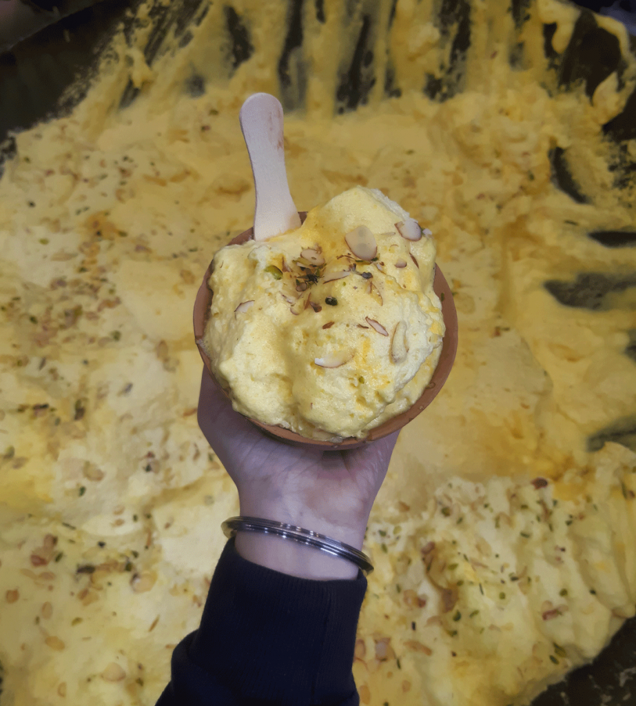

Malaiyyo
VARANASI is a place where you could be at peace and close to the traditions and culture of the country. No matter you are tourists or a local resident you would be definitely going to a strong and everlasting connection with the land only at the first sight. In this article, we will talk about where to find the best malaiyo in Varanasi, why is it so famous, the recipes and more. VARANASI is popularly known as the land of saints and Gods. This land is mainly popular and known in the world for its intricate and amazing BANARASI SARIS and the most special and tasty BANARASI PAAN. You must have heard a lot about these two specialties. But this article would make you fall in love with the third most popular dish of this pious city that is MALAIYO. MALAIYOis a recipe that is known only to the people of VARANASI. MALAIYO is a mouthwatering delicacy which is found in the land of BANARASI SARIS and is prepared with love and tenderness in the season of chilling winds basically from November to March. The most amazing and stunning fact about this delicacy is that, that it is prepared by the vendors of the city who have inherited this recipe from their ancestors and are in the business of preserving this exclusive sweet dish against all the modern and sugar-free sweets. MALAIYO generally includes only one main ingredient that is milk and these vendors very smartly and cleverly provide you the flavored milk generally with a layer of froth (foam) without even letting you know the secret of this recipe. Many chefs around the world have tried to match the essence of this delicacy but you will find its authentic taste only in VARANASI. MALAIYO is served in the wet earthen pot in order to provide it an aroma of traditions and is decorated with dry fruits and silver leaf. MALAIYO would give you the most memorable taste as when the foam melts in your mouth and provide you a mouthful taste of sweetness that is not extra sweet but has a creamy texture would make your day a little extra sweet and worth. MALAIYO that is mainly prepared only in winter season has a specific reason behind its sales only in the winter season. As the foam or froth over the sweetened and flavored milk could only be sustained and maintained in the winter season over a longer period of time, that’s why MALAIYO is prepared only in the winter season to provide you the ultimate satisfaction and taste. Recommended Shop: "Shreeji Sweets & Milk in Garwasi Tola,Varanasi" "Markandey Sardar Shop,Chaukhamba,Thatheri bazar.""
